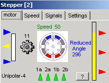

Stepper Motor 
At this moment the stepper motor device is only implemented as a 4-phase unipolar stepper motor (most common used).
The stepper motor (central in the picture on the right) has a reduction box (gear at the left of the stepper motor), a servo potmeter (left of the gear) output and max, mid and min switch outputs.
The reduced angle (after the reduction box) is represented both numerical and as a visual gauge.
Windings 1a and 1b represents the 2 windings (with center tap) on the same poles.
Windings 2a and 2b representw the windings on the other poles.
A good tutorial about stepper motors on line is written by Douglas W. Jones.
The motor-animation was taken from this tutorial.
